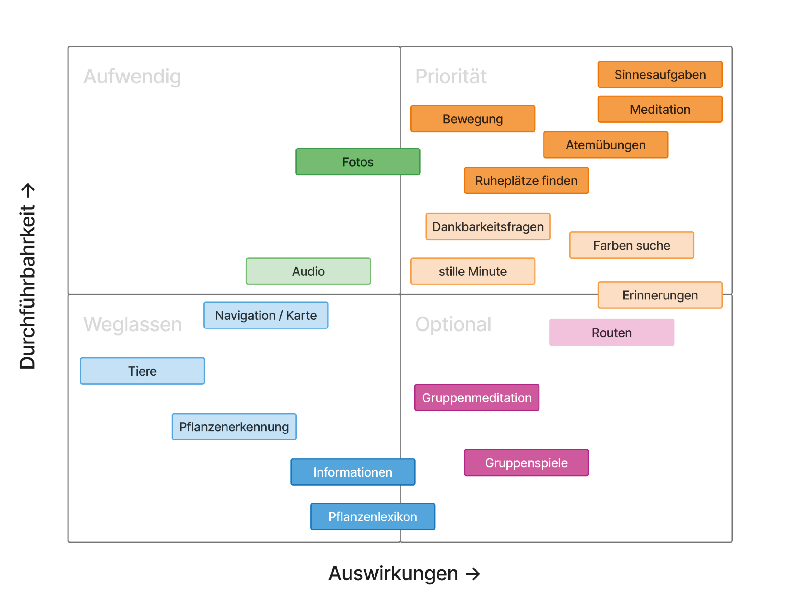

IN and OUT
IN
- Routine
> sollen regelmäßig und öfter kommen - Alle Jahreszeiten
- Achtsamkeit als Hauptthema
> Sinne
> Meditation und Gesundheit - Apothekengarten
- Fotooption
OUT
- Schnitzeljagd bzw. kein Storytelling
> Zielgruppe soll ihre Zeit und ihre Wege frei einteilen können
> Konzept passt nicht mehr zu unserer Zielgruppe - Informationen über Pflanzen
- kein Quiz
> Der Fokus soll auf den Sinnen statt auf dem Lernen liegen, deswegen auch kein Quiz, weil man sich ansonsten mehr auf das Merken konzentriert, statt auf sich selbst - Navigation bzw. Karte
> Man sollte sich frei bewegen können und es sollte kein Rundführer werden
> Wenn man sich an einer Route orientieren soll, kann es passieren dass man zu sehr aufs Handy schaut. Dies passiert dann häufig bei Erstbesuchern, da sie den Garten selbst auch noch nicht kennen. Sie sollen ihn aber selbst und nicht mit Hilfe des Gartens entdecken - Nur eine Jahreszeit
> Die Veränderung soll wahrgenommen werden, so können die Besucher Fotos machen und haben eine Belohnung wenn sie die Bilder vergleichen und so den Ort auf unterschiedliche Weisen sehen
> Ansonsten entsteht keine Routine, wenn die Zielgruppe nur einmal im Jahr im Garten ist, besteht die Gefahr, dass die App vergessen wird - Kein Kalender
> Man soll nicht das Gefühl bekommen, man hätte eine Verpflichtung zu erledigen
> Außerdem gibt es selbst schon eine Kalenderapp. Wenn man also Termine in Bezug zum botanischen Garten hat, kann man diese dort eintragen, deshalb ist ein Kalender in der App selbst ein unnötiges Feature - Gewächshaus
> Die Achtsamkeit ist durch Platz und frische Luft geprägt, dies hat man in den Gewächshäusern nicht, da dort die Menschen auf einem kleinen und engen Weg laufen.
> Wir möchten nicht, dass unsere App davon abhängig ist, dass unsere Zielgruppe Eintritt bezahlen muss - Fokus auf Tiere
> Nach unserer Recherche haben wir erfahren, dass es kaum oder wenig Tiere gibt, weshalb wir nicht das Risiko eingehen möchten, dass die Senioren die "Aufgabe" nicht erfüllen können
> Im botanischen Garten liegt der Fokus selbst auch nur auf Pflanzen - Events vom botanischen Garten selbst
> Der Fokus sollte hier auf eigenen Events liegen, wobei diese auch eher weniger Aufmerksamkeit genießen sollten
> Infos über die Events und Kurse gibt es schon auf der Website des botanischen Garten
Problems and Solutions
Problem Statment
Durch unsere Interviews haben wir herausgefunden, dass viele ältere Menschen gerne in der Natur spazieren
gehen, um
> sich zu bewegen
> sich zu entspannen
> den Kopf freizubekommen
> vor dem Alltag zu "fliehen"
Wir möchten also die Spaziergänge nutzen, um
> die Gesundheit und das Wohlbefinden älterer Menschen zu unterstützen.
> Dabei soll vor allem die Achtsamkeit im Vordergrund stehen, ohne dass der Spaziergang zu anstrengend
wird oder sich wie eine Pflicht anfühlt.
Capability Statement
Älteren Menschen ermöglichen, beim Spazierengehen:
> ihre Umgebung bewusster wahrzunehmen.
> zur Ruhe zu kommen und dadurch ihr Wohlbefinden zu stärken.
> Dabei sollen sie selbst entscheiden können, wie sie ihren Spaziergang gestalten und welche Angebote
sie nutzen möchten.
Priorisierung und Designansatz
- Besonders sinnvoll finden wir kleine Achtsamkeitsübungen, die sich einfach in einen Spaziergang einbauen lassen.
- Dazu gehören beispielsweise das bewusste Wahrnehmen von Naturgeräuschen, das Beobachten von Pflanzen oder kurze Ruhepausen.
Wir möchten dabei KEINE App entwickeln, die sehr viele Funktionen bietet, sondern eher ältere Menschen unterstützen,
ihren Spaziergang bewusster zu erleben und sich Zeit für sich selbst zu nehmen.
> Die App soll also dabei helfen, im Alltag zur Ruhe zu kommen und etwas für das eigene Wohlbefinden zu tun,
ohne vom eigentlichen Naturerlebnis abzulenken.
The two-axis Ranking
